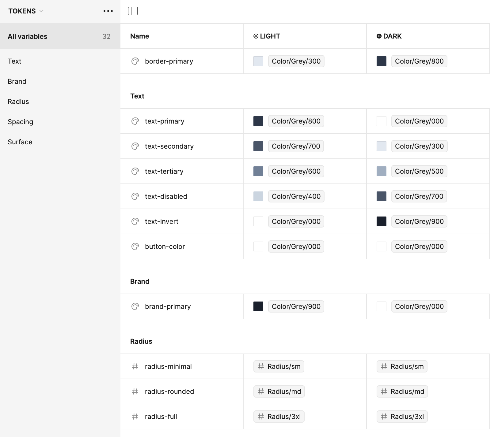

A complete overhaul of Prisma's visual identity and platform interface, focusing on improving developer experience while maintaining the brand's playful and innovative spirit. This project encompassed everything from marketing design to product interface, creating a cohesive design system that scales across all touchpoints.
The Challenge
Prisma needed to evolve its brand and platform to reflect its growing maturity in the developer tools space while maintaining the approachable, developer-friendly essence that made it popular. The challenge was to create a design system that could scale across marketing, documentation, and product interfaces while maintaining consistency and usability.

Design Process
The redesign process started with extensive research into developer workflows and pain points. We conducted user interviews, analyzed competitor approaches, and worked closely with the engineering team to understand technical constraints and opportunities.
The Solution
The final design system introduces a refreshed color palette, new typography hierarchy, and a component library that scales across all platforms. We maintained Prisma's signature yellow while introducing complementary colors that enhance readability and visual hierarchy.
Results & Impact
The redesign resulted in improved user engagement metrics, with a 40% increase in documentation time-on-page and a 25% decrease in support tickets related to interface confusion. The new design system has also significantly reduced design debt and accelerated the development process.